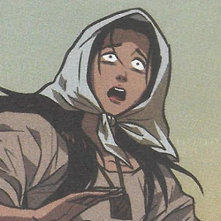

| CHARACTERS |
IBARRA |
SISA |
PADRE DAMASO |
MARIA CLARA |
KAPITAN TIAGO |
PADRE SALVI |
LUTENENT GUEVERRA |
PILOSIPO TASIO |
DESCRIPTION |
Si Ibarra ay mga bida sa Noli Me Tangere si Jose RizalSiya ay anak ni Don Rafeal, pero namatay siya kase "napinatay" ang isang tax collector na Espanya. |
Si Sisa ay nanay ni Crisipin at BasilioSiya ay Isang babae na nagtatrabaho at nahihirapan sa simbahan nang San DiegoNahihirapan kase walang siayng pera para kay Crisipin at Basilio |
Padre Damaso ay prayle sa San DeigoSiya din ay tumatawag ng mga Flipino ay Indio at LazyAt siya din ay tumapon ang katawan ni Don Rafael sa ilog |
 Si Maria Clara ay anak Ni Don TiyagoMahal na mahal ang mga tao ng San Diego dahil sa gandang na muka at may pagkakataon na magpakasal siya kay Ibarra, sabi ng mga tao ang mga Prayle sa simbahan Si Maria Clara ay anak Ni Don TiyagoMahal na mahal ang mga tao ng San Diego dahil sa gandang na muka at may pagkakataon na magpakasal siya kay Ibarra, sabi ng mga tao ang mga Prayle sa simbahan
 Kapitpan o Don Tiyago ay tatay ni Maria Clara at lahat ng mga tao ay nailala siya dahil siya ay mga mayaman na land owners sa maynila Kapitpan o Don Tiyago ay tatay ni Maria Clara at lahat ng mga tao ay nailala siya dahil siya ay mga mayaman na land owners sa maynila
| Si Padre Salvi ay Padre na serioso siya sa trabaho niya sa simbahan at siya ay napumalit ni Padre Damaso.
 Lutenent o teniente Guevarra ay teniente sa guradia civil at siay ay kasama ni Padre Sibyla sa dinner party ni Kapitan Tiyago Lutenent o teniente Guevarra ay teniente sa guradia civil at siay ay kasama ni Padre Sibyla sa dinner party ni Kapitan Tiyago
|  Pisolopo Tasio ay isang mandantang tao nag-aaral ng rationalism at at philospphy at hindi ang religion, dahil dito, tumatatawag ng mga tao ng San Diego ay weird dahil sa mga sabihin niya katulad ng rehilion o tumatawag siya ay philosopher dahil sa mga tao ay nagmahal sa mga turo niya sa rehilion Pisolopo Tasio ay isang mandantang tao nag-aaral ng rationalism at at philospphy at hindi ang religion, dahil dito, tumatatawag ng mga tao ng San Diego ay weird dahil sa mga sabihin niya katulad ng rehilion o tumatawag siya ay philosopher dahil sa mga tao ay nagmahal sa mga turo niya sa rehilion
| | |